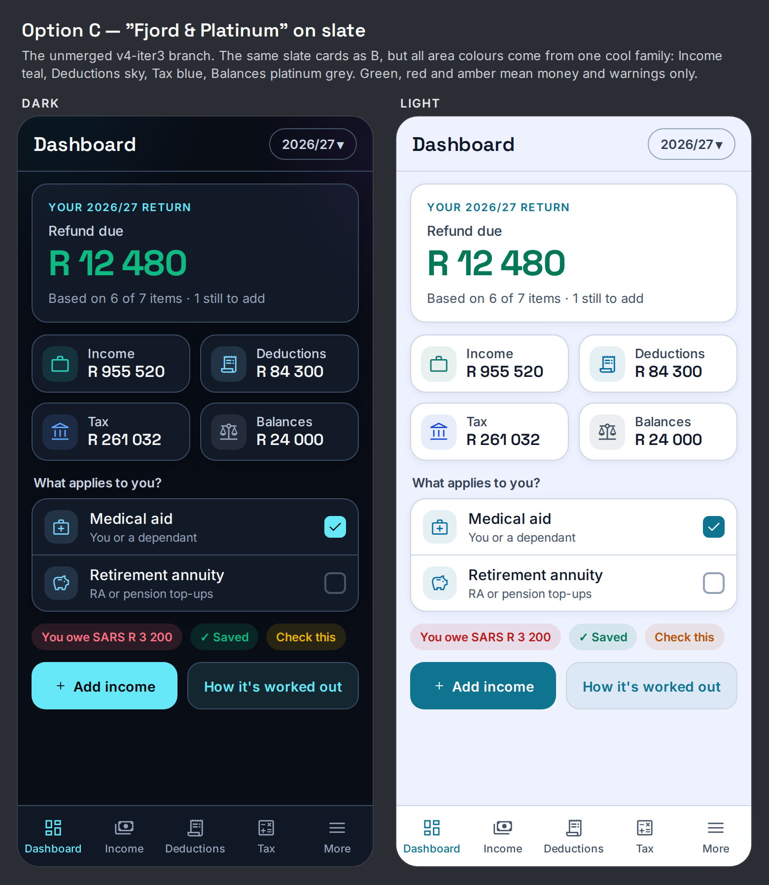

Batch 1 · Colour, surfaces & glow
- Long-press each of the 4 images and save them.
- Tap Copy Gemini prompt at the bottom.
- In Gemini: attach the 4 images, paste, and talk it through.
- Paste Gemini's Ruling Card back to Antigravity.




